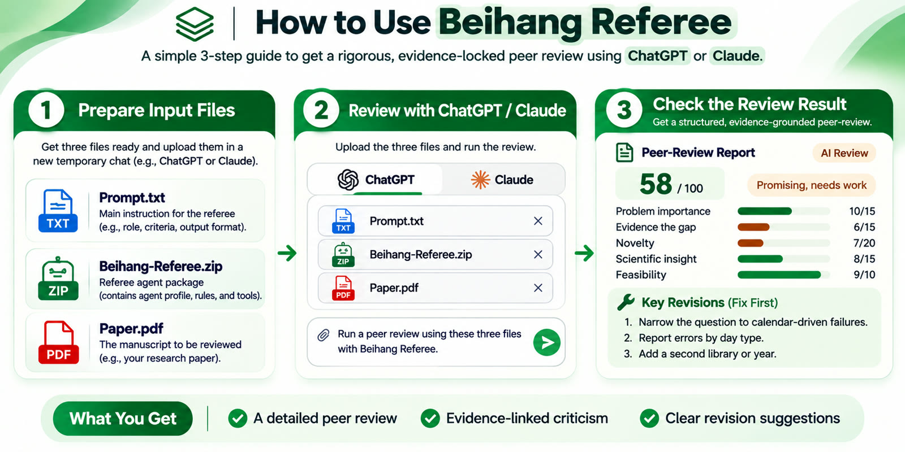

Download the 3 practice files
Click each file name to save it to your computer.
- referee-prompt.txtTells the AI what to look for
- referee-instructions.txtTells the AI how to write the review
- practice-manuscript.pdfThe made-up paper it will review
Six steps with ChatGPT or Claude. Every step is the same three moves:
What you get
Run a prompt in ChatGPT or Claude, paste the answer into this site, and you get a card like this one. It is a made-up sample, shown to teach the format.
How it works
Press Copy to copy a ready prompt. Press Download agent to get the skill file for that step. Prompts use the level you chose on the Prompts page (beginner by default).
Beginner, researcher and expert versions of every prompt, so you start at your own level.
Paste an answer back to see its score, its weak spots and whether it gave links and admitted what it could not check.
Nothing you type on this site is sent anywhere. The prompts only leave when you paste them into a chat.
| Step | Skill file | Get the skill | Prompts |
|---|---|---|---|
| 1 · Idea | Idea Discovery V5 | Download ↗ | Get prompts |
| 2 · Literature | Paper Finder | Folder ↗ | Get prompts |
| 3 · First draft | Paper Writing Agent V2 | Download ↗ | Get prompts |
| 4 · Code | Research Code Agent V5 | Download ↗ | Get prompts |
| 5 · Results | Paper Writing Agent V2 | Download ↗ | Get prompts |
| 6 · Review | Beihang Referee | Download ↗ | Get prompts |
More skills (figures, slides, poster, grants, patent, proofs): full list on GitHub ↗
What you get
You paste the AI's answer into the site and see its score, its weak spots and what to fix first. This one is a made-up sample (a library-visits project), shown to teach the format.
Loading the sample…
Choose a task and add your details. Copy the result, open a chat, and attach the files listed in the current stage. See an example.
Practice first · about 5 minutes
Download a made-up paper, ask ChatGPT to review it, check the answer. Nothing here matters, so you can't get it wrong.

Click each file name to save it to your computer.
Tip: in ChatGPT you can choose Temporary chat so this practice is not saved.
The AI will list problems with the paper. For the first problem, open the PDF at the place it points to. Does the paper really say that? If yes, the AI did a good job. If not, tell it so in the chat.
A good answer looks something like this:
Your chat's wording will be different. That's fine.
Want to see the answer as a picture with a quality check? Paste it under Prompts → Check the answer you got.
It is the same three moves every time: copy a prompt, attach your files, check the answer. The Prompts page gives you the right prompt for each step.